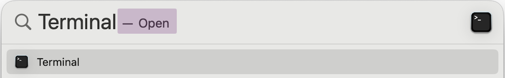
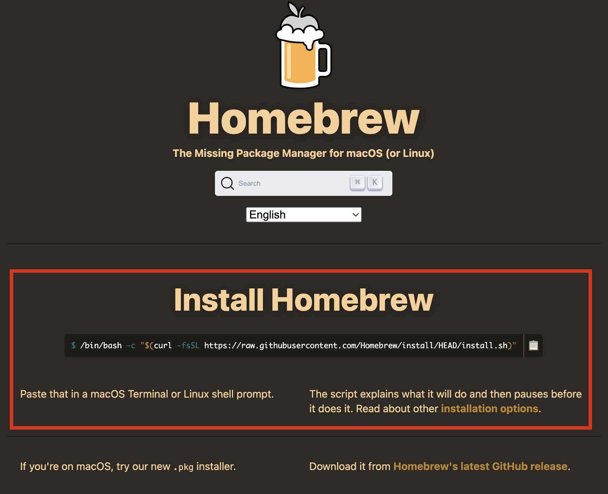
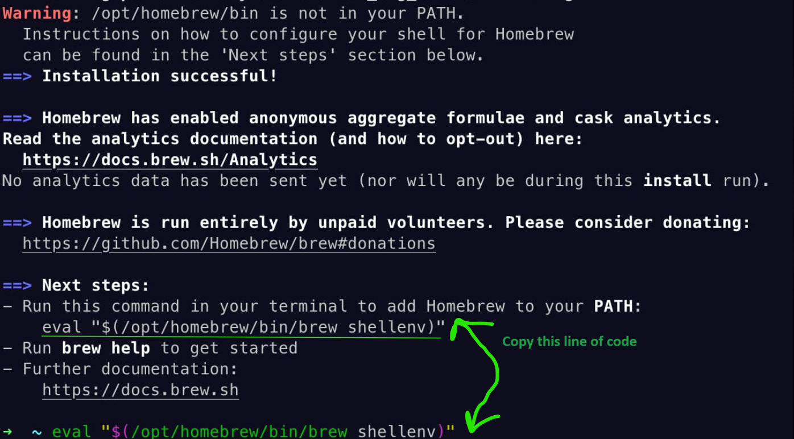
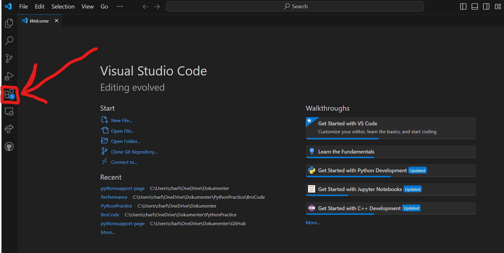
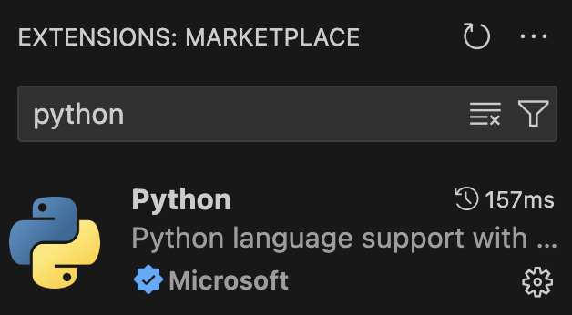
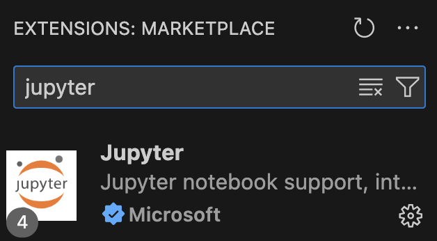

— Homebrew Installation#
Video Guide — description found below
Step 1: Install Homebrew#
Go to this website and follow the instructions.
The Homebrew website will ask you to open a terminal. Find the using your Spotlight search (Command+Space) and press Enter. You might get asked several times for your password to grant permissions.
Note: your password will not be shown while typing it.
Do not close the terminal once the installation script has finished.


NOTE: Not all MacOS requires this step!
If Homebrew requests you to execute commands under Next steps:, then complete this step.
Add Homebrew to the
PATHby copying, pasting and running the code that Homebrew displays in the Terminal (look at the picture below for guidance). Press Enter once you have pasted the code. The code should look similar to the following image but might differ slightly for different MacOS versions.
{kind=link}
{kind=link}
{kind=link}
Step 2: Install Miniforge and Python#
Installs all packages required for the 1st year Polytechnical Foundation courses at DTU.
Close the previously used , and open up a new using Spotlight search (Command+Space and search for
Terminal).Paste the following code in the Terminal and press Enter.
brew install --cask miniforge
Paste the following code in the Terminal and press Enter.
conda init "$(basename "${SHELL}")" eval "$(conda "shell.$(basename "${SHELL}")" hook)"
Run the following command in the Terminal by copying, pasting and pressing Enter:
conda config --add channels conda-forge ; conda config --remove channels defaults ; conda config --set channel_priority strict
Tip
You can copy and paste code in the code blocks by hovering your mouse over the code block and pressing the icon () appearing in the top right corner.
Run the following command in the Terminal by copying, pasting and pressing Enter:
conda install python=3.12 dtumathtools pandas scipy statsmodels uncertainties -y
Step 3: Install Visual Studio Code#
Install Visual Studio Code by pasting the following in your terminal and pressing Enter.
brew install --cask visual-studio-code
Step 4: Install extensions for Visual Studio Code#
Open Visual Studio Code and select the Extensions tab on the left.

Search for Python, and download the extension. Make sure that it is from Microsoft.

Hereafter search for Jupyter, and download that extension as well. This also needs to be from Microsoft.

{kind=link}
{kind=link}
{kind=link}
{kind=link}
Verification#
Video Guide — description found below
Verify that your installation is successful by following these steps:
Search for using your Spotlight search (Command+Space) and press Enter. Verify that
(base)is shown to the left of your username. Something like the image below:
Type
idle3in the Terminal, then press Enter. This should open a new window in which you can run Python code.Verify the IDLE window says
Python 3.12.Xin the top left (or in the range of 3.10 – 3.12).Copy the following Python code into the IDLE window, then press Enter:
import dtumathtools, pandas, scipy, statsmodels, uncertainties
Verify that a new line (
>>>) appears without any text (indicating everything got imported correctly). See the below image for an example:
{kind=link}
If some steps result in a different than described above, please continue reading the Troubleshooting section.
Troubleshooting#
Only follow these troubleshooting steps if something in the previous section did not check out.
Ensure that Miniforge is installed, follow these instructions.
Ensure the packages are installed (if they are already installed, this will not do anything).
Paste the following line of code to the Terminal and press Enter:
conda install python=3.12 dtumathtools pandas scipy statsmodels uncertainties -y
Go back to the previous Verification section and check them again.
If you are still having trouble or have any questions, please do not hesitate to visit us during office hours or contact us via email or Discord. More information can be found on our homepage.